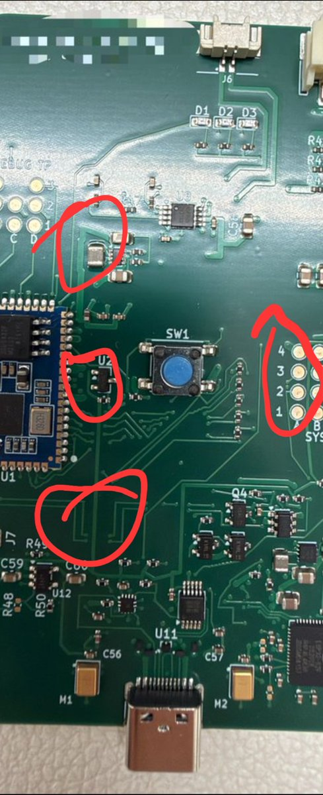

ShimoKaze
@wind_dmr
@Kellyv_ai 奇怪的斜线，直角甚至锐角转弯，同一个网络莫名其妙的改变粗细，明明可以走直线却拐个大弯，多的懒得看了，进步空间还很大（

KellyV
@Kellyv_ai
第一块，完全由 AI 工程师设计、开发，并且真正成功点亮的 PCB，诞生了。
不是 Demo。
不是仿真。
不是两层小板。
是一块有一定复杂度的 4 层 PCB。
固件已经成功烧录。
首灯已经亮了。
从设计到硬件落地，AI 真的开始进入物理的工程世界了。
这一次，不是 AI 写代码。
是 AI https://t.co/rxomvUpxXz https://t.co/zckzndkF17